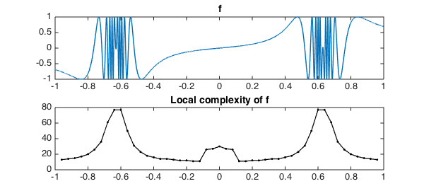
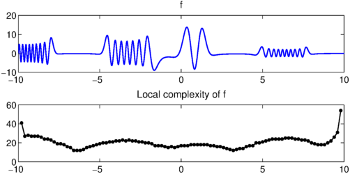
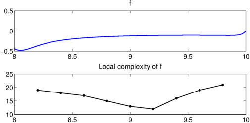

Sometimes a function $f$ is more complex in some regions than others. Maryna Kachanovska of the Max Planck Institute in Leipzig suggests the following question about a function $f$ defined on an interval: at each point $x$, how high a degree polynomial do you need to approximate $f$ to a specified accuracy $\varepsilon$ in $[x-d,x+d]$, where $d$ is a small number?
It is easy to compute an answer to such a question with Chebfun, using the syntax f{x-d,x+d} to focus on subintervals. For example, here's a function that's quite wiggly in two regions:
x = chebfun('x');
f = sin(x./(1.02+cos(5*x)));
Let's scan it from left to right, measuring what length of chebfun is needed for a representation to accuracy $10^{-6}$ on intervals of length $0.2$:
function Scan(f,ep,d)
% First, plot the function f:
FS = 'fontsize'; LW = 'linewidth';
subplot(2,1,1), plot(f,LW,1.4)
title('f',FS,14)
% Next, scan its complexity and make a plot:
[a,b] = domain(f);
np = round((b-a)/d);
xx = linspace(a+d,b-d,np-1);
chebfunpref.setDefaults('eps',ep);
ll = 0*xx;
for j = 1:length(xx)
ll(j) = length(f{xx(j)-.999999*d,xx(j)+.999999*d});
end
subplot(2,1,2), plot(xx,ll,'.-k',LW,1.2)
xlim([a b])
title('Local complexity of f',FS,14)
chebfunpref.setDefaults('factory');
end
Scan(f,1e-6,.04)

Here is another complicated function and its scan:
u = @(ep) chebop(@(x,u) ep*diff(u,2)+x.*cos(x).*u,[-10,10],0)\1; f = u(.01); Scan(f,1e-6,.2)

This last plot seems surprising -- why does the complexity go up at the right endpoint? On closer examination we find that the boundary condition has introduced a blip there:
Scan(f{8,10},1e-6,.2)

end